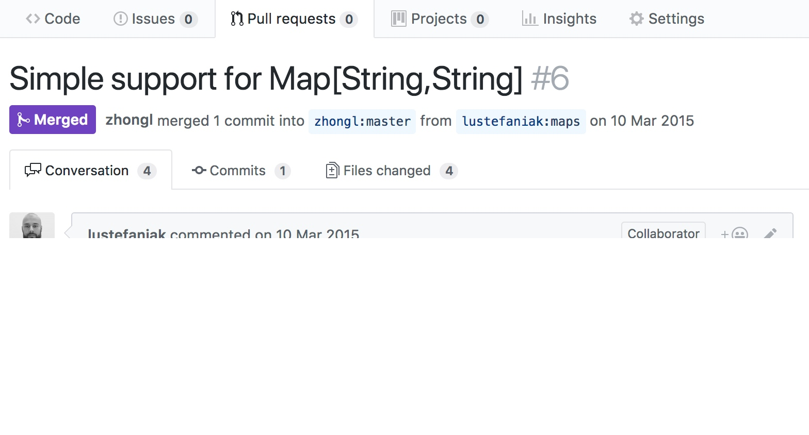

利用测试用例提速 Code Review
一说到 Code Review 没人不说好，可一旦开始做就呵呵哒了。貌似写测试用例也是如此，本文斗胆将二者结合起来，看看是否能够提升 Code Review 的效率，同时还增加一个写好测试用例的理由。
Code Review 的窘境
最为常见的 Code Review 方式，就是一帮人订了个会议室，在投影的代码下唇枪舌战数个小时后，代码主要编写者领到一堆”所谓”改进意见，大家就不欢而散了，再然后就多半没有然后了。
上面的描述或许过于极端，如果你的实际场景没有这样糟糕的话，那么恭喜你，不是最惨的！
究其原因，想必实践过的人都能说上一两点，比如：
- 没找对合适的 Reviewer
- 被 Code Style 这类细节带歪了楼
- 各种命名含义不明确，不一致，没法讨论
- 代码（改动）太多，弄不清脉络重点
等等，这里不一一列举了。其实，上面都还不是真正的原因。
Code Review 本质与测试相同，两个核心点：
- 边界明晰的范围，即评审的目标对象有哪些？
- 尽可能统一的评价标准（维度），即什么是好，什么是坏？
统一的评价标准（维度）
- 银弹式的标准几乎没有，因为编程的世界极少存在唯一解法；
- 常见的标准就是大家曾经认可过的设计方案，原则，或是约定等；
- 标准至少要在评审的参与者中能够达成一致，当然适用范围越大越好；
- 若存在分歧，最好在有限时间内友好协商；
- 若还是彼此有所保留，笔者建议由代码质量的第一责任人最终定夺。
测试用例的价值
试想一下，如果存在良好可读性的测试用例，Code Review 的过程便会轻松愉快，如下：
- 对比一下 测试用例 代码的变化，那么对应的实现代码变化，在每位参与评审人中都有一个基本统一的预期了；
- 默认提交评审前，所有测试用例都是运行通过的，接下来就根据测试用例改动点的业务优先级排序，逐个评审；
- 先看测试用例的变化是否满足需求的预期，比如场景是否覆盖全面，用例逻辑是否正确？
- 再看其实现的相关代码是否有改进空间，比如执行效率高低，简洁易读与否？
- 过完后，将需要补充纠正的要点列入 TODO List，等待代码更新，安排下次评审，直到代码可以合并。
良好可读性的测试用例能进一步提升评审效率
测试用例的命名好坏，与断言逻辑是否简洁清晰，直接影响评审者的发现问题的速度和准确率。
为了形象的说明，来看一个比较”极端”的范例：
"append remote address as query string to via of received request" in {
pipeline("10.0.0.1:12345" ~ "10.0.0.2:5902") >>> {
"""
|LWP /xxx
|via:tcp://10.0.0.1:12306
|
|
"""
} ==> {
"""
|LWP /xxx
|via:tcp://10.0.0.1:12306?r=10.0.0.1:12345
|
|
"""
}
}以上是笔者在阿里工作期间，为通讯协议网关服务器编写的真实测试代码片段。此网关服务器类似 nginx，实现了是对自定义通讯协议的过滤和转换。更多细节可参见我相关的 分享
首先测试用例命名简要说明了逻辑行为的期望，即
对收到的请求追加远端地址作为 via 的
query
参数。后面测试的断言逻辑也清晰的呈现出，对于一个链接两端的
pipeline，在收到一个请求处理过后，其结果是在其
via 头的值上追加了 r=10.0.0.1:12345，即
pipeline 左边（远端）的地址。
上面代码是利用 Scala 灵活的语法创造用于简化断言逻辑的 DSL。
笔者并非鼓吹此种极端程度的测试用例编写风格，只是为了让大家对良好可读性的重要性有更深刻的认识。
几乎主流的编程语言都有优秀的测试工具库来帮助提升改善测试用例代码的可读性，因此，笔者强烈推荐务必使用。比如，再看一个使用 ScalaTest 正常的范例：
class UnitGenSpec extends FlatSpec with Matchers {
"duration" should "get right unit" in {
Macro.time(1 nanosecond) shouldBe "1ns"
Macro.time(1 microsecond) shouldBe "1us"
Macro.time(1 millisecond) shouldBe "1ms"
Macro.time(1 second) shouldBe "1s"
Macro.time(1 minute) shouldBe "1m"
Macro.time(1 hour) shouldBe "1h"
Macro.time(1 day) shouldBe "1d"
}
"bytes" should "get right unit" in {
Macro.bytes(1023L) shouldBe "1023B"
Macro.bytes(1025L) shouldBe "1025B"
Macro.bytes(1024L) shouldBe "1K"
Macro.bytes(1024L * 1024) shouldBe "1M"
Macro.bytes(1024L * 1024 * 1024) shouldBe "1G"
}
}辅以流程工具事半功倍
前面的阐述，相信你已经明白怎么做了。最后，我就好人做到底，分享我的最佳工具实践。
Code Review on Github
- 代码库配置一个持续集成服务，比如 travis-ci；
- 所需评审的代码变更都必须以 Pull Request 方式提交，提交后 travis-ci 会自动帮你对变更的代码版本运行测试用例，是否通过的结果会显示在 Pull Requst 中；

Pull Request 就是一个特殊的 Issue，需要说明变更的意图，且自动包含了变更的所有
commits以及 方便的文件 diff 视图，这里提供一个真实的 Pull Request 供参考 https://github.com/hanabix/config-annotation/pull/6
- 余下的操作细节，还请自行参考 Pull Request 文档 。
不能用 Github 怎么办？
用 Gitlab 代替。
End.